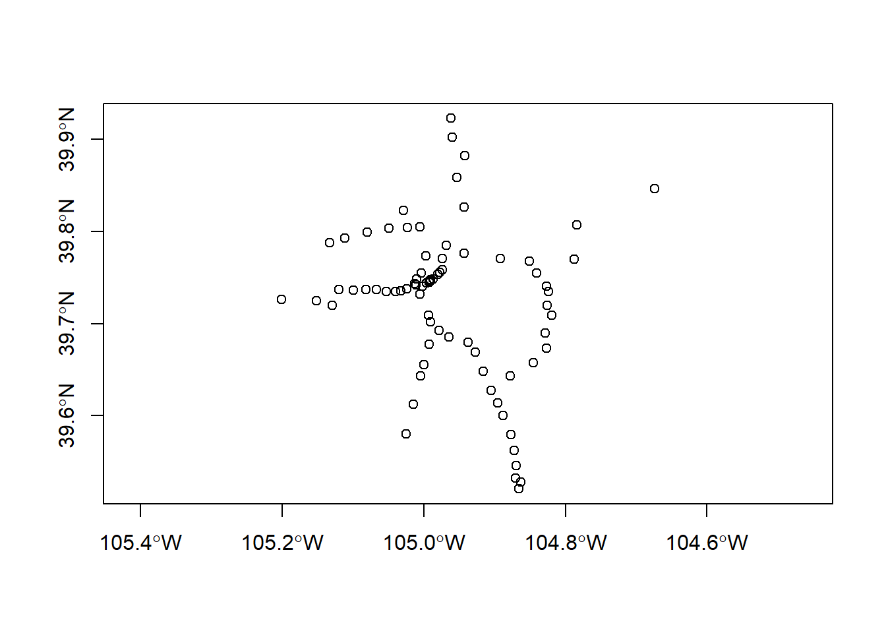
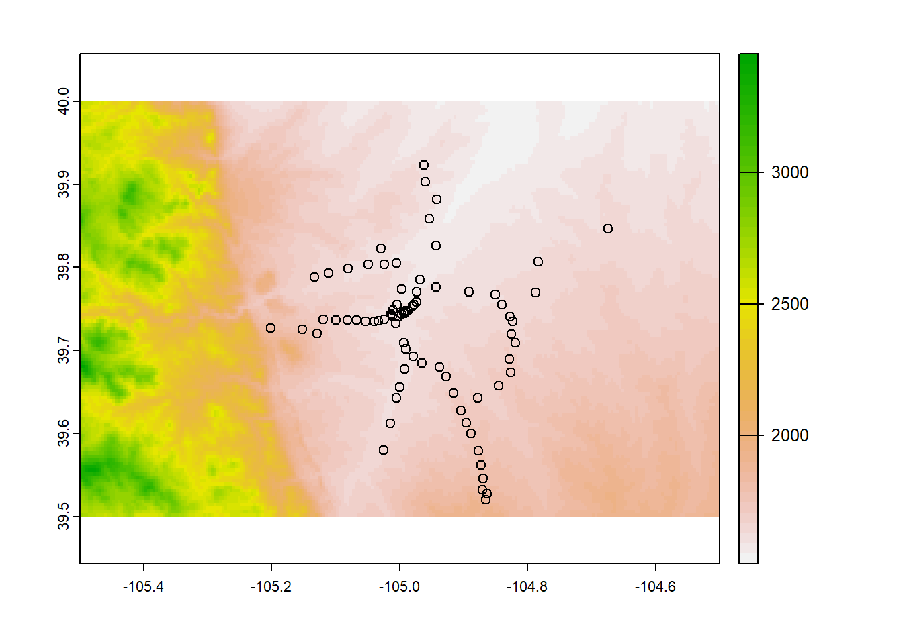
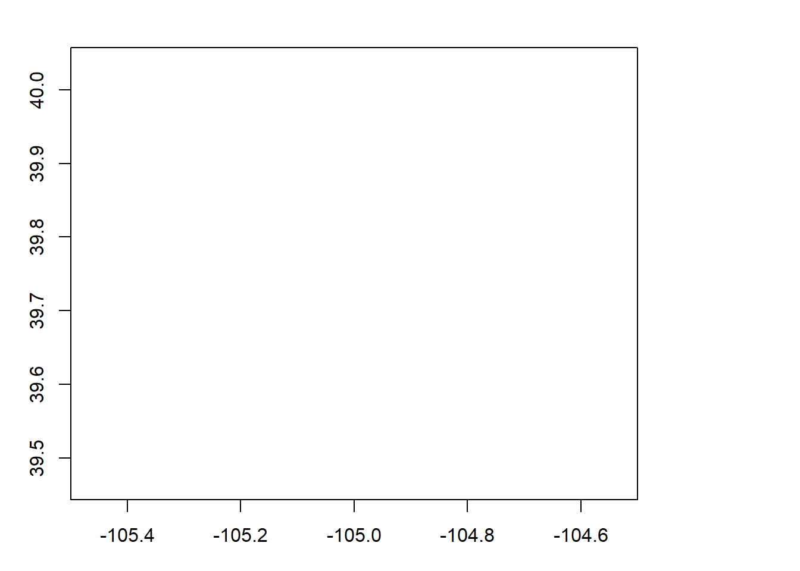
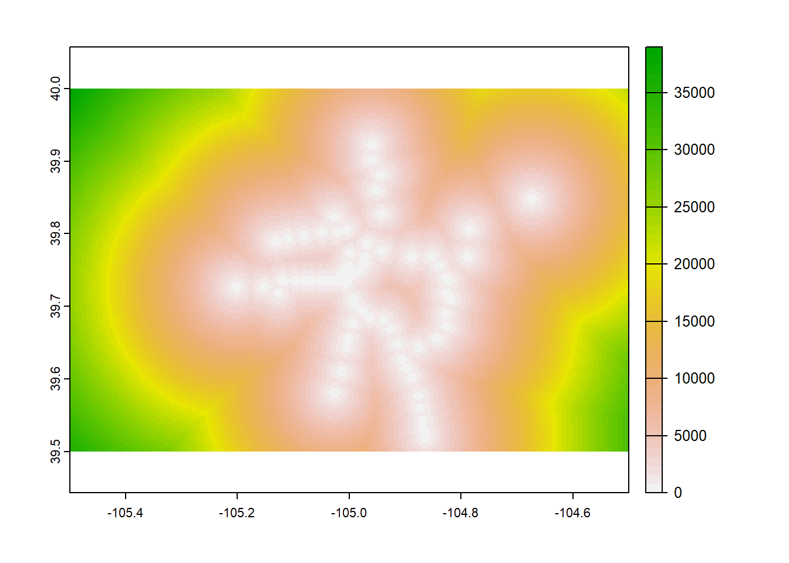
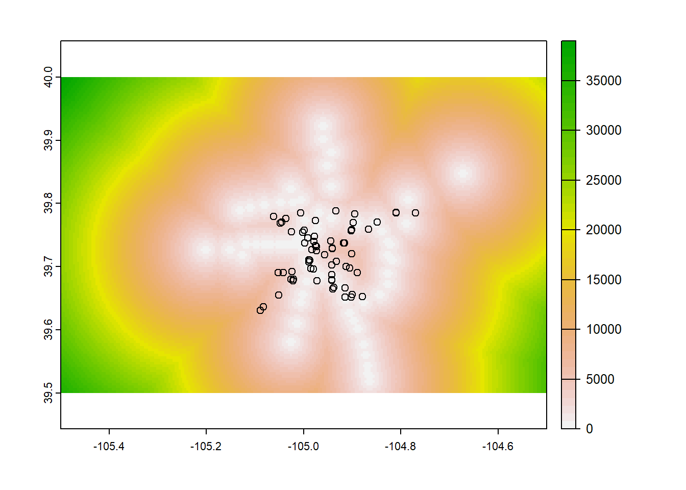
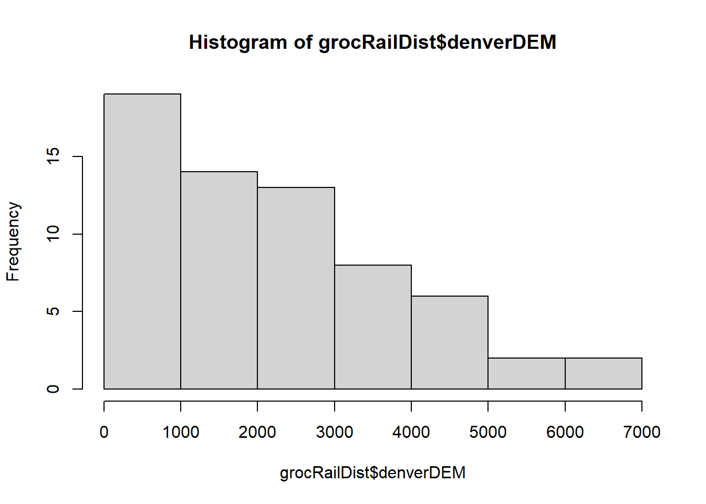

Part 3 Raster Data Operations
Next, we’ll look at doing some distance-based operations using a raster dataset. This particular example deals with grocery stores and light rail stations in Denver, which has implications for food and transportation equity, but this method could easily be applied to any situation where we want to know how close or distant some entities (e.g., sites with evidence for butchery) are from other entities of interest (e.g., raw stone material sources).
3.1 Adding vector data
First, let’s get our train stations loaded.
denverRail<-st_read("denverRail.shp")## Reading layer `denverRail' from data source
## `C:\Users\bdav_\Dropbox\Teaching\Spatial R Short Course\Bookdown\Exercise4\denverRail.shp'
## using driver `ESRI Shapefile'
## Simple feature collection with 77 features and 29 fields
## Geometry type: POINT
## Dimension: XY
## Bounding box: xmin: -105.2013 ymin: 39.52047 xmax: -104.6739 ymax: 39.9229
## Geodetic CRS: WGS 84plot(st_geometry(denverRail),axes=T) Doesn’t look like much at the moment, but this is genuine, bonafide rail station data from the Denver RTD. What we’re interested in is: how far are metro Denver’s grocery stores from a rail station?
##Adding some raster data
We’re going to use terra’s distance function to figure out how far away our train stations are from… well, to start we’re going to figure out how far away they are from everything. What we need to start is a raster dataset that more or less covers the same area. Here’s an elevation model once again from our friends at GEBCO.
denverDEM<-rast("denverDEM.asc")You may have noticed that there’s a different file extension here from the usual .tif. This .asc file is an ASCII raster, which is also a common way to share raster data. Rather than being an image file like a GeoTIFF, the ASCII raster is a text table with the same number of rows and columns as the raster. At the very top of this file are 6 lines of text called a header, which gives whatever machine is reading it information about the number of rows, columns, etc. In order to be useful here, the ASCII file has to be accompanied by a .prj file, which you’ll see sitting in the working directory in the Files tab.
OK, so we need to make sure that these datasets are overlapping in terms of space. Let’s plot them and take a look:
plot(denverDEM,axes=TRUE)
plot(st_geometry(denverRail),add=T)
OK, that looks pretty good so far. Let’s take a look at the distance function.
3.2 distance function
The distance function takes a raster and vector as arguments and returns a raster that gives the distance to the nearest vector feature for every cell. However, it can be a little finnicky about the values in the raster you give it, so it’s best to give it a blank raster. We can make one of these by creating a copy of the DEM and then setting all of the cells in that raster to NA.
naRaster<-denverDEM
naRaster[]<-NA
plot(naRaster)
There you have it: a blank raster. Next, since this is a terra function, we’re going to turn our sf vector data into a SpatVector with vect:
denverRail2<-vect(denverRail)
denverRail2## class : SpatVector
## geometry : points
## dimensions : 77, 29 (geometries, attributes)
## extent : -105.2013, -104.6739, 39.52047, 39.9229 (xmin, xmax, ymin, ymax)
## coord. ref. : lon/lat WGS 84 (EPSG:4326)
## names : OBJECTID PID NAME LOCAL_RTS EXPRESS_RT LIMITED_RT
## type : <int> <int> <chr> <chr> <chr> <chr>
## values : 157 64 Littleton / Mi~ 402L NA NA
## 158 63 Littleton / Do~ 29-36-59-66 NA NA
## 159 65 Oxford-City of~ 51 NA NA
## REGIONAL_R SKYRIDE_RT SPECIAL_RT ADDRESS (and 19 more)
## <chr> <chr> <chr> <chr>
## NA NA D 3203 W Mineral~
## NA NA D 5777 S Prince St
## NA NA D 4101 Windermer~Now we’re ready to run the distance function. This might take a a few seconds to run.
railDistance<-distance(naRaster,denverRail2)OK, so as you can see, we gave it an empty raster and a SpatVector object that both occupy the same space. This tells the distance function that we want to calculate the distance between them and turn that into our new object railDistance. Let’s take a look:
plot(railDistance)
It looks a little crazy, but hopefully you can see that the white-ish points in this image are where the rail stations are, and then the color in the plot increases with distance from these locations. The distance is in meters by default.
3.3 Exploring relationships between distance and another feature
Now let’s figure our where our grocery stores fall in terms of distance from a rail station. First we add our grocery stores:
denverGrocery<-st_read("denverGrocery.shp")## Reading layer `denverGrocery' from data source
## `C:\Users\bdav_\Dropbox\Teaching\Spatial R Short Course\Bookdown\Exercise4\denverGrocery.shp'
## using driver `ESRI Shapefile'
## Simple feature collection with 446 features and 11 fields
## Geometry type: POINT
## Dimension: XY
## Bounding box: xmin: 3109915 ymin: 1650081 xmax: 3219009 ymax: 1730349
## Projected CRS: NAD83(2011) / Colorado Central (ftUS)Careful here: this dataset is in the Colorado State Plane CRS, so it won’t work immediately with our WGS84 lat/long data. We can reproject it pretty easily, though:
denverGroceryWGS<-st_transform(denverGrocery,4326)
head(denverGroceryWGS)## Simple feature collection with 6 features and 11 fields
## Geometry type: POINT
## Dimension: XY
## Bounding box: xmin: -105.0257 ymin: 39.71079 xmax: -104.9731 ymax: 39.76008
## Geodetic CRS: WGS 84
## OBJECTID POINT_X POINT_Y STORE_NAME ADDRESS_LI
## 1 1 -105.0257 39.76009 WALGREENS 2975 N FEDERAL BLVD
## 2 2 -104.9838 39.74743 UPTOWN OASIS 298 E 20TH AVE
## 3 3 -104.9731 39.71089 DIAMOND SHAMROCK 300 S DOWNING ST
## 4 4 -104.9831 39.72552 LITTLE STAR MART 300 E 6TH AVE
## 5 5 -105.0246 39.71080 WALGREEN'S #10935 300 S FEDERAL BLVD
## 6 6 -104.9888 39.74281 RUSSELL'S #204 303 16TH ST
## STORE_TYPE LICENSE_NU CITY ZIP SNAP WIC geometry
## 1 Convenience Store 75399 DENVER 80211 No No POINT (-105.0257 39.76008)
## 2 Small Food Market 1052788 DENVER 80205 No No POINT (-104.9838 39.74742)
## 3 Convenience Store 29906 DENVER 80209 Yes Yes POINT (-104.9731 39.71088)
## 4 Convenience Store 0 DENVER 80203 No No POINT (-104.9831 39.72551)
## 5 Convenience Store 1040325 DENVER 80219 Yes Yes POINT (-105.0246 39.71079)
## 6 Convenience Store 14879 DENVER 80202 No No POINT (-104.9888 39.7428)Next we’ll subset it to true grocery stores:
denverGrocs<-subset(denverGroceryWGS,STORE_TYPE=="Grocery Store")
head(denverGrocs)## Simple feature collection with 6 features and 11 fields
## Geometry type: POINT
## Dimension: XY
## Bounding box: xmin: -105.0514 ymin: 39.65479 xmax: -104.9444 ymax: 39.77618
## Geodetic CRS: WGS 84
## OBJECTID POINT_X POINT_Y STORE_NAME ADDRESS_LI
## 14 14 -105.0514 39.65480 KING SOOPERS 3100 S SHERIDAN BLVD
## 23 23 -104.9889 39.71038 SAFEWAY 323 S BROADWAY
## 40 40 -104.9444 39.74033 SPROUTS FARMERS MARKET 3625 E COLFAX AVE
## 44 44 -104.9874 39.70976 NATURAL GROCERS 368 S BROADWAY
## 45 45 -104.9759 39.77299 NATURAL GROCERS 3757 N BRIGHTON BLVD
## 49 49 -105.0366 39.77619 SAFEWAY 3800 W 44TH AVE
## STORE_TYPE LICENSE_NU CITY ZIP SNAP WIC geometry
## 14 Grocery Store 0 DENVER 80219 No No POINT (-105.0514 39.65479)
## 23 Grocery Store 0 DENVER 80209 Yes Yes POINT (-104.9889 39.71037)
## 40 Grocery Store 1045687 DENVER 80206 Yes Yes POINT (-104.9444 39.74032)
## 44 Grocery Store 0 DENVER 80209 Yes Yes POINT (-104.9873 39.70975)
## 45 Grocery Store 0 DENVER 80216 No No POINT (-104.9759 39.77298)
## 49 Grocery Store 0 DENVER 80211 Yes Yes POINT (-105.0366 39.77618)3.4 Visualizing and quantifying distance relationships
OK, let’s see what that looks like on the distance map:
plot(railDistance,axes=T)
plot(st_geometry(denverGrocs),add=T)
What do you notice? There is definitely some overlap between where the rail stations are and where the grocery stores are, but there are also some places where it looks like a 5 km walk or more from the train!
What we really need now is to extract these raster values and see what the distribution looks like. To do that, we’re going to use the extract function. And again, since this is a terra function, we’ll convert our vector data to a SpatVector so it plays nicely.
grocRailDist<-extract(railDistance,vect(denverGrocs))Doing this gives us table of values, and we can use the $ operator to pass the column with the distance values to a histogram:
hist(grocRailDist$denverDEM)
This is interesting: many grocery stores are pretty close to a rail station, but there are also a fair number that are 4, 5, or 6 kms away. While a resident of Denver might know this by gut instinct, we’ve now quantified this relationship. It’s official: we’re answering spatial questions!